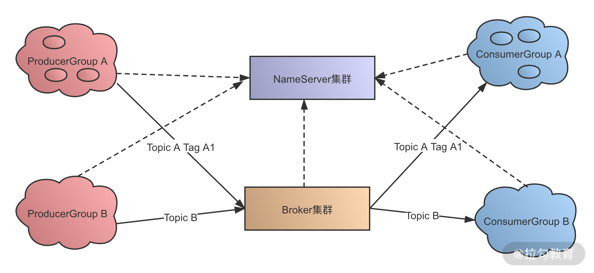
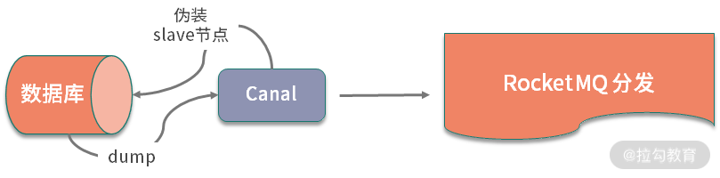

- 00 开篇词：搭建分布式知识体系，挑战高薪 Offer.md.html
- 01 如何证明分布式系统的 CAP 理论？.md.html
- 02 不同数据一致性模型有哪些应用？.md.html
- 03 如何透彻理解 Paxos 算法？.md.html
- 04 ZooKeeper 如何保证数据一致性？.md.html
- 05 共识问题：区块链如何确认记账权？.md.html
- 06 如何准备一线互联网公司面试？.md.html
- 07 分布式事务有哪些解决方案？.md.html
- 08 对比两阶段提交，三阶段协议有哪些改进？.md.html
- 09 MySQL 数据库如何实现 XA 规范？.md.html
- 10 如何在业务中体现 TCC 事务模型？.md.html
- 11 分布式锁有哪些应用场景和实现？.md.html
- 12 如何使用 Redis 快速实现分布式锁？.md.html
- 13 分布式事务考点梳理 + 高频面试题.md.html
- 14 如何理解 RPC 远程服务调用？.md.html
- 15 为什么微服务需要 API 网关？.md.html
- 16 如何实现服务注册与发现？.md.html
- 17 如何实现分布式调用跟踪？.md.html
- 18 分布式下如何实现配置管理？.md.html
- 19 容器化升级对服务有哪些影响？.md.html
- 20 ServiceMesh：服务网格有哪些应用？.md.html
- 21 Dubbo vs Spring Cloud：两大技术栈如何选型？.md.html
- 22 分布式服务考点梳理 + 高频面试题.md.html
- 23 读写分离如何在业务中落地？.md.html
- 24 为什么需要分库分表，如何实现？.md.html
- 25 存储拆分后，如何解决唯一主键问题？.md.html
- 26 分库分表以后，如何实现扩容？.md.html
- 27 NoSQL 数据库有哪些典型应用？.md.html
- 28 ElasticSearch 是如何建立索引的？.md.html
- 29 分布式存储考点梳理 + 高频面试题.md.html
- 30 消息队列有哪些应用场景？.md.html
- 31 集群消费和广播消费有什么区别？.md.html
- 32 业务上需要顺序消费，怎么保证时序性？.md.html
- 33 消息幂等：如何保证消息不被重复消费？.md.html
- 34 高可用：如何实现消息队列的 HA？.md.html
- 35 消息队列选型：Kafka 如何实现高性能？.md.html
- 36 消息队列选型：RocketMQ 适用哪些场景？.md.html
- 37 消息队列考点梳理 + 高频面试题.md.html
- 38 不止业务缓存，分布式系统中还有哪些缓存？.md.html
- 39 如何避免缓存穿透、缓存击穿、缓存雪崩？.md.html
- 40 经典问题：先更新数据库，还是先更新缓存？.md.html
- 41 失效策略：缓存过期都有哪些策略？.md.html
- 42 负载均衡：一致性哈希解决了哪些问题？.md.html
- 43 缓存高可用：缓存如何保证高可用？.md.html
- 44 分布式缓存考点梳理 + 高频面试题.md.html
- 45 从双十一看高可用的保障方式.md.html
- 46 高并发场景下如何实现系统限流？.md.html
- 47 降级和熔断：如何增强服务稳定性？.md.html
- 48 如何选择适合业务的负载均衡策略？.md.html
- 49 线上服务有哪些稳定性指标？.md.html
- 50 分布式下有哪些好用的监控组件？.md.html
- 51 分布式下如何实现统一日志系统？.md.html
- 52 分布式路漫漫，厚积薄发才是王道.md.html
36 消息队列选型：RocketMQ 适用哪些场景？
关于消息队列的应用场景有很多，不同消息队列由于在实现上有着细微的差别，所以就有各自适合的应用场景。
如果你的工作以业务开发为主，建议了解一下消息队列背后的设计思想，以及其基本的特性，这样才能在业务开发中应用消息队列时，对消息队列进行合理的选型。这一课时我们一起来对 RocketMQ 做一个拆解。
RocketMQ 应用
RocketMQ 在阿里巴巴被大规模应用，其前身是淘宝的 MetaQ，后来改名为 RocketMQ，并加入了 Apache 基金会。RocketMQ 基于高可用分布式集群技术，提供低延时、高可靠的消息发布与订阅服务。
RocketMQ 整体设计和其他的 MQ 类似，除了 Producer、Consumer，还有 NameServer 和 Broker。

NameServer 存储了 Topic 和 Broker 的信息，主要功能是管理 Broker，以及进行消费的路由信息管理。
在服务器启动时，节点会注册到 NameServer 上，通过心跳保持连接，并记录各个节点的存活状态；除此之外，NameServer 还记录了生产者和消费者的请求信息，结合消息队列的节点信息，实现消息投递的负载均衡等功能。
RocketMQ 的 Broker 和 Kafka 类似，Broker 是消息存储的承载，作为客户端请求的入口，可以管理生产者和消费者的消费情况。
Broker 集群还承担了消息队列高可用的责任，它可以扩展副本机制，通过主从节点间的数据同步保证高可用，这一点和 Kafka 的分区副本机制非常类似。
我们知道，消息队列的 Topic 是逻辑概念，实际会分散在多个队列中传输。在 RocketMQ 中，队列均匀分散在各个 Broker 上。在消息投递时，消息生产者通过不同的分发策略，对投递的消息进行分发，保证消息发布的均匀。
Broker 可以进行横向扩展——如果消息队列集群不能满足目前的业务场景，那么可以增加新的机器，扩展 Broker 集群。新的 Broker 节点启动以后，会注册到 NameServer 上，集群中的生产者和消费者通过 NameServer 感知到新的节点，接下来就可以进行消息的发布和消费。
和其他的消息队列不同，RocketMQ 还支持 Tag，Tag 是对 Topic 的进一步扩展，可以理解为一个子主题。有了 Tag，在进行消息队列的主题划分时，可以把一个业务模块的消息进一步拆分，使其更加灵活。
比如在电商业务场景中，通常我们会按照订单、商品、交易、物流等大的模块进行划分，但是在实际应用中，订单消息仍有订单创建、订单支付、订单配送等不同的消息，商品消息也会有商品价格更新、库存更新等不同的分类。使用一级主题，对消息的拆分也许不能满足业务的要求。但通过 Tag，我们可以把订单消息统一为 Order-Topic。下面继续创建 Order-Create-Message、Order-Pay-Message 等子主题，对各项信息进行细化，使其在应用中变得更加方便，在业务开发中会更加灵活。
RocketMQ 特性
在本课时开始提到一个问题，即 RocketMQ 适用哪些场景？可以从两个方面入手，第一个方面是消息队列的通用业务场景，第二个是从 RocketMQ 的特性入手。
RocketMQ 消息中间件的使用场景比较广泛，对于需要通过 MQ 进行异步解耦的分布式应用系统来说，都可以应用 RocketMQ 作为解决方案。下面梳理两个 RocketMQ 的典型应用。
实现 Binlog 分发
很多业务场景都对消息消费的顺序有很高的要求。以电商业务中的 Binlog 消息分发为例，我们知道，在大多数业务场景下，除了数据库作为持久层存储以外，还会有文件索引、各类缓存的存在。
比如电商中的订单信息，订单信息在用户端的展示是通过 ElasticSearch 等文件索引实现的。在订单状态修改后，需要实时同步修改，但一般业务中不会直接操作文件索引，那如何同步数据呢？
业务数据被分散在不同的存储中，就一定要考虑数据一致性，一个典型的解决方案是基于 Binlog 的数据同步。
使用 RocketMQ 实现 Binlog 数据同步，有一个成熟的方案，那就是 RocketMQ 结合阿里的 Canal。Canal 是阿里巴巴开源的数据库组件，可以基于 MySQL 数据库进行增量日志解析，实现增量数据订阅和消费，目前已经在很多大公司中应用。

Canal 的实现原理特别巧妙。不知道你有没有看过谍战题材的影片，比如 007 系列。Canal 在这里就好像一个伪装的特工，它模拟 MySQL Slave 的交互协议，把自己作为 MySQL 主从同步中的一个从节点，拉取 Binlog 日志信息，然后进行分发。
Canal 和 RokcetMQ 都是阿里巴巴开源的组件，并且都在阿里云上实现了商业化，二者的集成也是顺其自然的。在 Canal 中已经内置了对 RocketMQ 的支持，支持开箱即用的配置方式。
除此之外，Canal 的解决方案还包括一个可视化界面，该界面可以进行动态管理，配置 RocketMQ 集群。如果你在调研 Binlog 数据同步机制，并且自己所在的团队又没有大量的人力进行支持，那可以了解一下这个解决方案。
对 Canal 感兴趣的同学，可以点击查看 Canal 的代码仓库。
实现分布式一致性
RocketMQ 支持事务消息，那什么是事务消息呢？在 RocketMQ 中，事务消息就是支持类似 XA 规范的分布式事务功能，通过 RocketMQ 达到分布式事务的最终一致。
以电商中的下单后扣款为例，用户在完成商品购买后，点击确认支付，这时候会调用交易模块的服务，更新账户金额，或者从第三方支付扣款。
这是一个典型的分布式事务问题。关于分布式事务，我们在第 06 课时讨论过，可以使用 TCC 进行改造，也可以使用基于消息队列的本地消息表。
RocketMQ 实现的事务消息，其实和本地消息表非常类似。RokcetMQ 在事务消息的实现中添加了一个 Half Message 的概念，我理解为“半事务消息”，或者“事务中消息”。Half Message 表示事务消息处于未完成状态，利用这个中间状态，可以实现一个类似于两阶段提交的流程，实现最终的一致性。
关于 RocketMQ 的事务消息原理，官方文档中有一篇文章做了比较深入地介绍，这里我就不再展开介绍了，感兴趣的同学可点击这里查阅。
总结
这一课时的内容分享了 RocketMQ 的应用场景，列举了两个典型应用。
在专栏中我多次推荐大家去看一下 RocketMQ 的源码，为什么呢？
首先，源码之下无秘密，想要彻底学习并且搞懂一个组件，学习源码是最有效的手段之一；其次，专栏的读者中有相当一部分是做 Java 语言开发的，RocketMQ 的源码就是 Java 语言，比起 Kafka 或者 RabbitMQ 的源码，阅读起来要简单很多。
在你的项目中是否应用到了 RocketMQ，在应用时又利用了它的哪些特性呢？欢迎留言讨论。